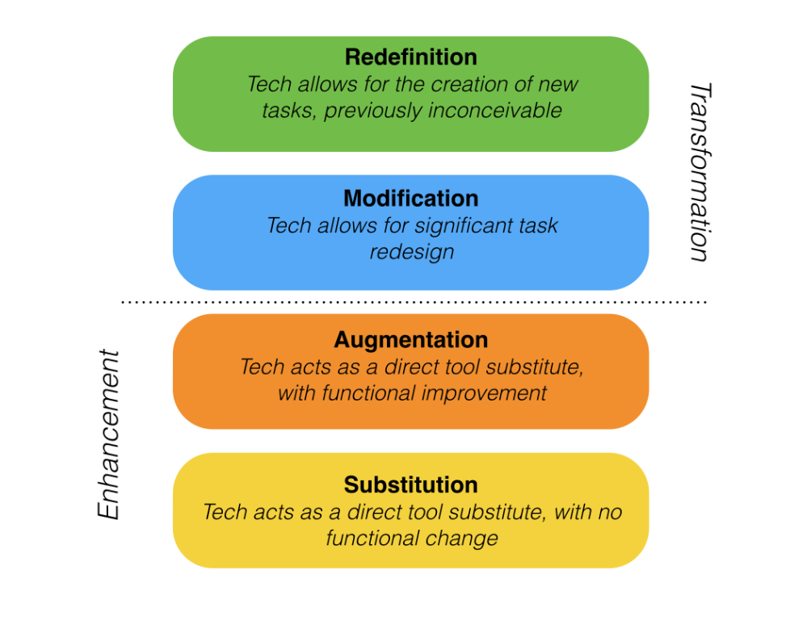

7.4 Avaliando as possibilidades (affordances) das mídias: o modelo SAMR



7.4.1 Explorando as possibilidades (affordances) de uma mídia
Observou-se na seção anterior que a tecnologia de vídeo pode ser utilizada como substituta direta de uma aula expositiva presencial, bastando para isso substituir a transmissão presencial pela transmissão on-line. A modalidade de transmissão mudou, mas não a pedagogia. As potencialidades (affordances) plenas da mídia de vídeo não foram exploradas.
Por outro lado, a utilização do vídeo para exibir um documentário pode trazer exemplos poderosos de situações às quais se aplicam as ideias e conceitos abordados numa disciplina acadêmica. Um documentário apresenta, assim, o potencial de aproveitar melhor as affordances do vídeo do que a gravação de uma aula expositiva tradicional, porque a experiência de aprendizagem resultante da visualização de um documentário difere daquela obtida ao assistir a uma aula expositiva gravada. Ao mesmo tempo, a utilização de um vídeo documental exigirá uma abordagem de ensino diferente da utilizada numa aula expositiva e conduzirá, provavelmente, a resultados distintos. Com a videoaula expositiva, os estudantes focarão na compreensão e no entendimento; com o documentário, o foco dos estudantes incidirá na análise e na crítica do material.
7.4.2 O modelo SAMR
Uma forma adequada de avaliar se uma aplicação específica de mídias ou de tecnologias tira pleno partido das affordances de uma mídia consiste em aplicar o modelo SAMR, desenvolvido pelo Dr. Ruben Puentedura, um consultor tecnológico sediado nos EUA.
Puentedura sugere quatro "níveis" de aplicação de tecnologia na educação:
- substituição (substitution): substituição direta de uma ferramenta por outra, sem alteração funcional, por exemplo, a gravação em vídeo de uma aula expositiva presencial sobre a qualidade da água, disponibilizada para os estudantes baixarem; os alunos são avaliados sobre o conteúdo da aula expositiva através de exames escritos no final do curso.
- ampliação (augmentation): substituição direta de uma ferramenta por outra, com melhoria funcional, por exemplo, a videoaula expositiva é integrada num LMS e editada em quatro seções, com perguntas de escolha múltipla on-line no final de cada seção para os estudantes responderem.
- modificação (modification): redesenho significativo das tarefas, por exemplo, o professor disponibiliza gravações em vídeo de testes de qualidade da água e solicita aos estudantes que analisem cada uma das gravações em função dos princípios ensinados na disciplina, sob a forma de perguntas de desenvolvimento que são avaliadas.
- redefinição (redefinition): criação de novas tarefas, inconcebíveis sem a utilização da tecnologia, por exemplo, o professor disponibiliza leituras e orientação on-line através do LMS, e solicita aos estudantes que registrem com os seus celulares a forma como selecionaram amostras de água para testar a qualidade, integrando as suas conclusões e análises sob a forma de um e-portfólio do seu trabalho.
Nos dois primeiros níveis, substituição e ampliação, o vídeo é utilizado para melhorar o método de ensino, mas é apenas quando o vídeo é utilizado nas duas fases finais, modificação e redefinição, que o ensino é de fato transformado. Significativamente, Puentedura associa os níveis de modificação e transformação ao desenvolvimento de competências de nível superior da taxonomia de Bloom, competências essenciais no século XXI como a análise, a avaliação e a criatividade (Puentedura, 2014). Para uma descrição mais detalhada do modelo e do seu funcionamento, ver o vídeo: Introduction to the SAMR model.
7.4.3 Pontos fortes e limitações do modelo
Primeiro, não foi possível encontrar qualquer investigação científica que validasse este modelo. Este apresenta uma forte sensação de bom senso, mas seria positivo vê-lo mais validado empiricamente, embora existam muitos exemplos da sua utilização real, sobretudo na formação de professores no setor da educação básica (pode encontrar alguns exemplos reunidos por Kelly Walsh aqui. Para uma reação mais crítica ao modelo SAMR, ver Linderoth, 2013).
Segundo, embora o modelo constitua um meio útil para avaliar se a utilização da tecnologia se limita a melhorar ou a alterar radicalmente o ensino, não ajuda muito na parte difícil, que reside em conceber, em primeiro lugar, as formas transformadoras através das quais uma tecnologia poderia ser utilizada. No entanto, revela-se um bom recurso heurístico para o levar a refletir sobre a melhor forma de utilizar a tecnologia no ensino.
Terceiro, existirão situações em que a substituição e a ampliação constituirão uma utilização perfeitamente justificável da tecnologia, por exemplo no caso de estudantes com deficiência, ou para aumentar a acessibilidade aos materiais de aprendizagem.
Contas feitas, trata-se de um modelo muito útil através do qual um professor pode avaliar a utilização potencial ou real da tecnologia. Em particular, foca na forma como os estudantes necessitarão de interagir com a tecnologia e nas vias pelas quais esta pode ser utilizada para apoiar o desenvolvimento de competências do século XXI. Ao mesmo tempo, necessitamos de compreender como e por que razão as mídias e a tecnologia poderiam ser utilizadas para transformar o ensino em primeiro lugar. O primeiro passo consiste, assim, em compreender melhor as propriedades únicas das diferentes tecnologias, tema que constitui o objeto da seção seguinte.
Referências
Linderoth, J. (2013) Open letter to Dr. Ruben Puentedura Spelvetenskapliga betraktelser, 17 de outubro
Puentedura, R. (2014) SAMR and Bloom’s Taxonomy: Assembling the Puzzle common sense education, 24 de setembro
Atividade 7.4 Avaliando o modelo SAMR
- Se estiver utilizando alguma tecnologia no seu ensino, onde se enquadra no referencial SAMR em comparação com a interação presencial entre professor e estudante? O que poderia alterar para fazer a tecnologia "subir na escala"?
- Você precisa explorar plenamente as affordances de uma mídia? Se sim, por quê?
Para feedback sobre esta atividade, clique no podcast abaixo:
Um elemento de áudio foi excluído desta versão do texto. Você pode ouvi-lo on-line aqui: https://pressbooks.bccampus.ca/teachinginadigitalagev2/?p=1237